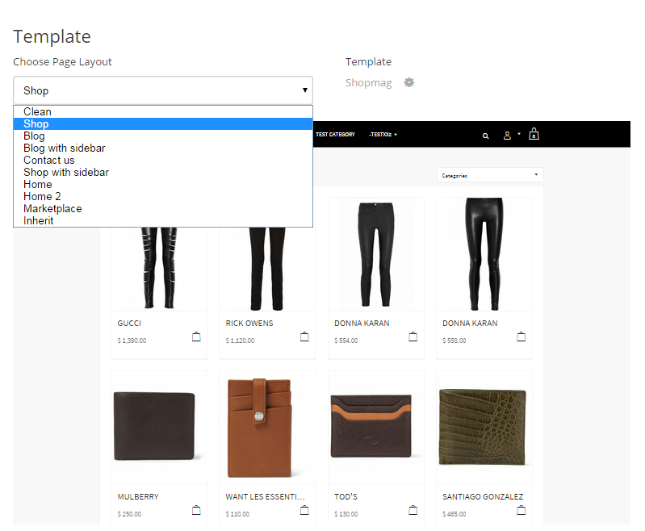
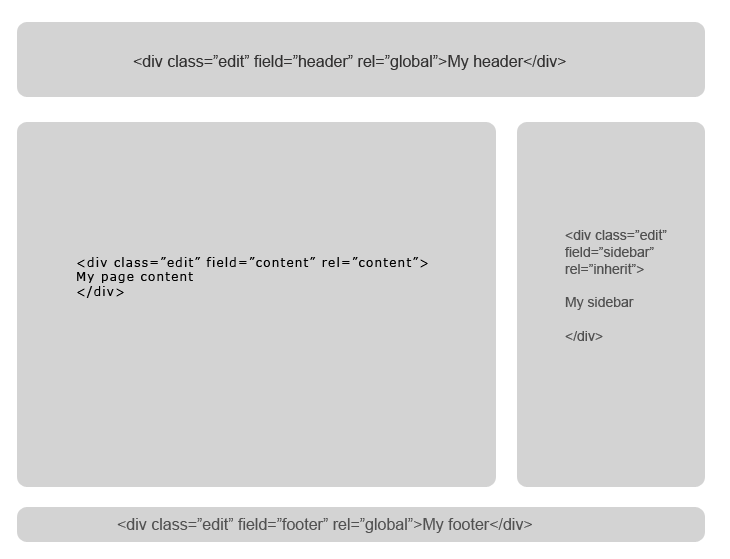

Creating Templates
Microweber templates live within their own folders under userfiles/templates/. The template folder name is restricted to lowercase alphanumeric (a-z, 0-9), underscore (_) and dash (-). The template in examples on this page is located in userfiles/templates/my_template
Basic File Structure
/userfiles
/templates
/my_template
config.php
header.php
index.php
footer.php
clean.php
###Basic files and their purpose
| Filename | Description |
|---|---|
| config.php | holds the information for your template, like name, version |
| index.php | homepage default layout |
| header.php | site header |
| footer.php | site footer |
| clean.php | default layout for page |
| inner.php | default layout for post |
Configuration
Here is example config file you must create in your template folder
userfiles/templates/my_template/config.php
Defining the $config array in this file makes the template appear in the admin panel.
Example config.php
$config = array(
'name' => 'My Template',
'author' => 'Author Name',
'version' => 1.0,
'url' => 'http://author.com/my-template'
);
Header + Footer
Template header and footer can be loaded within the template layout to add common assets, scripts and styles for the website.
Example header.php<!DOCTYPE HTML>
<html prefix="og: http://ogp.me/ns#">
<head>
<title>{content_meta_title}</title>
<meta http-equiv="Content-Type" content="text/html; charset=UTF-8">
<meta http-equiv="X-UA-Compatible" content="IE=edge">
<meta name="viewport" content="width=device-width, initial-scale=1, user-scalable=no">
<!-- Site Meta Data -->
<meta name="keywords" content="{content_meta_keywords}">
<meta name="description" content="{content_meta_description}">
<!-- Site Open Graph Meta Data -->
<meta property="og:title" content="{content_meta_title}">
<meta property="og:type" content="{og_type}">
<meta property="og:url" content="{content_url}">
<meta property="og:image" content="{content_image}">
<meta property="og:description" content="{og_description}">
<meta property="og:site_name" content="{og_site_name}">
<!-- Loading CSS and Javascripts -->
<link rel="stylesheet" type="text/css"
href="<?php print template_url('css/style.css'); ?>" />
<script type="text/javascript"
src="<?php print template_url('assets/site.js'); ?>"></script>
</head>
<body>
Note: Registering the og prefix in the <html> tag imports a metadata namespace from ogp.me for SEO optimization and improved link previews on user share in social media.
You can use the template_url() function to get the URL to the template folder. The template_dir() function returns the full filesystem path to the template.
The curly bracket syntax ({content_meta_title}) is replaced with the appropriate content when the template is rendered.
Put any closing tags in footer.php, as well as common content like footer menus, copyright info, etc.
Example footer.php </body>
</html>
Rendering Modules
To make the template functional modules need to be rendered.
You can also put global editable regions, so users can alter the content.
Modules are loaded in place of the custom <module type="module_name" /> tag.
Example in header.php<div id="header">
<div class="edit" rel="global" field="header">
<h1>
<a href="<?php print site_url(); ?>">
<?php echo get_option('website_title', 'website'); ?>
</a>
</h1>
<module type="menu" name="header_menu"
id="main-navigation" template="pills" />
</div>
</div>
Example in footer.php<div id="footer" class="edit" field="footer" rel="global">
<div>Copyright © <?php print date('Y'); ?> All rights reserved</div>
<module type="menu" name="footer_menu" />
</div>
Layouts
Templates have one or more “layouts”, or pages.
The vast majority of sites need complex structure with different types of screens; this can be acheived by adding a variety of page layouts to your template.
Each page layout is rendered separately but you can define common regions, such as header, footer or sidebar to share code between layouts.
Create different layouts to allow users to change the layout, design or impression depending on the type of pages for their blog, shop or contact form.

Layouts are php scripts located in the template’s folder or subfolders, e.g. /userfiles/templates/my_template/layouts/. The index.php file is used as a homepage layout.
Microweber recognizes layout files by scanning the template folder for scripts annotated with the following comment syntax in the beginning:
/*
type: layout
name: Shop
content_type: static
description: Suitable for e-commerce pages
*/
Different layouts can be set for every page when editing it in the website administration.
The clean layout is used by default for new pages and also as a fallback layout if no other can be found.
Example clean.php<?php
/*
type: layout
content_type: static
name: Clean
position: 2
description: Default
*/
?>
<?php include template_dir(). "header.php"; ?>
<div id="content">
<div class="container edit" field="content" rel="content">
<p>This is my text</p>
</div>
</div>
<?php include template_dir(). "footer.php"; ?>
Editable Regions
Editable regions can be defined by adding the edit class to any html element.
Example index.php<?php
/*
type: layout
content_type: static
name: Home
description: Landing page
*/
?>
<?php include template_dir().'header.php'; ?>
<div class="container">
<div class="edit" field="content" rel="content">
<h2>Welcome to my homepage!</h2>
<p>
This is my awesome Microweber template.<br />
You can edit this text since its container has an "edit" class.
</p>
<p>Just click here and start typing!</p>
</div>
</div>
<?php include template_dir().'footer.php';
How to make editable regions
You can define editable regions in your template where the user will be able to type text and Drag and Drop modules
The content of this region will be dynamic and will be editable on every layout that includes it.
Here is how it looks like:
<div class="edit" field="your_region_name" rel="content"> |
Simply add class “edit“ and “field“ and “rel“ attributes to ANY html element.
As a developer you can decide how many editable regions you want. They are very flexible and can be re-used across pages.
Creating editable field
- Add class “edit”
- Add “field” attribute
- Add “rel” attribute
Editable region attributes
Each editable region behaves differently in dependence of the rel and field attributes you add to it
field attribute
The field attribute will help you to define multiple content-editable regions in your layout.
Add attribute field="some_name" and set the name of your field in your template.
The main content region that the user sees during the “Add content” process must have field="content"
rel attribute
The rel attribute is responsible for the “scope” of your content-editable field.
You can define custom scope and reuse the content of the editable regions across the whole website.
Add attribute rel and set the scope of your field.
rel="content"- changes for every page or postrel="global"- changes for the whole siterel="page"- changes for every page and sub-pagerel="post"- changes for every postrel="inherit"- changes for every main page, but not is sub-pages and postsrel="your_custom_rel"you can define your own scope
other attributes
There is optional attribute “rel-id”, which allows you to display editable regions that belong to another content
Default content region
The default region that shows in the Admin panel is defined by rel="content" and field="content" attributes of your html element

Microweber template layouts recommended filenames standard
For the site content to be shown across different templates, we have a list of recommended filenames that you can use while creating your template.
For easier management if files, you can put most of the page layouts in a subfolder of your template called layouts, for example /userfiles/templates/my_template/layouts/blog.php
| Filenames | Description |
|---|---|
index.php, index_1.php, index_2.php, … |
Layouts for the home page |
header.php |
site header |
footer.php |
site footer |
editor.php |
layout the wyswyg editor in the admin |
clean.php |
layout for page |
inner.php |
layout for post |
login.php |
layout user login |
register.php |
layout user register |
profile.php |
layout for user profile management |
layouts/gallery.php |
for gallery page |
layouts/contact.php |
for contact page |
layouts/about.php |
for about page |
layouts/blog.php, layouts/blog_1.php, layouts/blog_2.php, … |
for blog |
layouts/blog_inner.php, layouts/blog_1_inner.php, layouts/blog_2_inner.php, … |
for blog post |
layouts/shop.php, layouts/shop_1.php, layouts/shop_2.php, … |
for shop |
layouts/shop_inner.php, layouts/shop_1_inner.php, layouts/shop_2_inner.php, … |
for shop product inner page |
layouts/portfolio.php, layouts/portfolio_1.php, layouts/portfolio_2.php, … |
for portfolio |
layouts/portfolio_inner.php, layouts/portfolio_1_inner.php, layouts/portfolio_2_inner.php, … |
for portfolio inner page |
All those layouts are optional, you dont have to create them for all templates